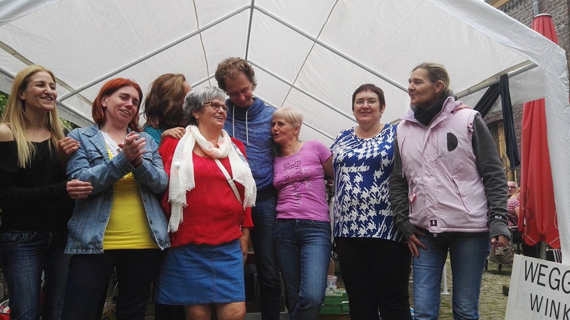
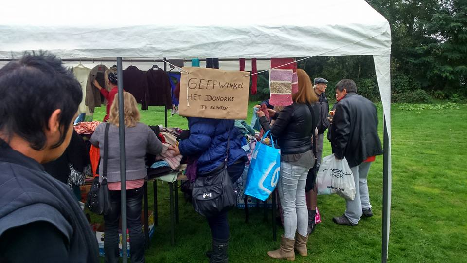

Geefwinkel 'Het Donorke' te Schoten is een prachtig concept, opgestart door Brigitte Lauryssen. Zij huurt op eigen kosten een pand in de Kruiningenstraat te Schoten, waar de geefwinkel zich bevindt. Het concept is simpel: Het helpen van mensen die het minder breed hebben. Bijna alles in deze winkel is namelijk gratis. Alles wat u kan gebruiken mag u meenemen, mits een kleine uitzondering; er zijn een paar rekken met voorwerpen die verkocht worden aan een zacht prijsje, om Brigitte te helpen met de huur van het pand, de rekeningen voor het onderhoud, enzovoort ...
Van kledij, speelgoed, boeken, vazen, muziekcd's, huishoudgerief, ... U kan er vanalles vinden. Grote meubels vindt u niet in het Donorke zelf, maar deze vindt u mogelijk wel op Facebook.
Het Donorke heeft namelijk een populaire facebookgroep, 'Geefwinkel het donorke te schoten', waar leden
ook eigen gerief te geef kunnen aanbieden. Ook hier posten de beheerders van het Donorke regelmatig
voorwerpen op waarop de mensen mogen bieden, om eveneens mee te helpen met de huur van het pand, etc.
Dit alles gebeurt puur op vrijwillige basis,
dus alle beetjes die u kan bijdragen zijn absoluut welkom!
De beheerders van Het Donorke en de klanten zullen u zeer dankbaar zijn!
Dinsdag: 10u - 12u / 13u - 16u
Donderdag: 13u - 19u
Oneven weken:
Woensdag: 13u - 18u
Wanneer het Donorke op een (geef)markt staat of een bepaald evenement organiseert, zal u deze info hier kunnen lezen.
 
| Datum. | Uur. | Evenement. | Plaats. | Inschrijven? | Facebooklink |
|---|---|---|---|---|---|
| 27/09 | 19u00 | Live veiling. Ter plekke betalen en meenemen ten voordele van het Donorke. Iedereen is welkom! | Geefwinkel Het Donorke. | Neen,vrije toegang. | Klik hier |
| 28/12 | 13u00 (Namiddag) | De Kerstman weer bij ons en deelt cadeautjes uit aan de kinderen. De Kerstman krijgt ook graag tekeningen! Parking zal voorzien zijn in de metropoolstraat. | Geefwinkel Het Donorke. | Laat weten met hoeveel kinderen je komt en welke leeftijd ze hebben! | Klik hier |